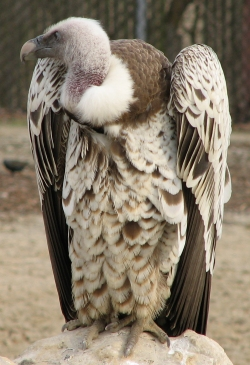
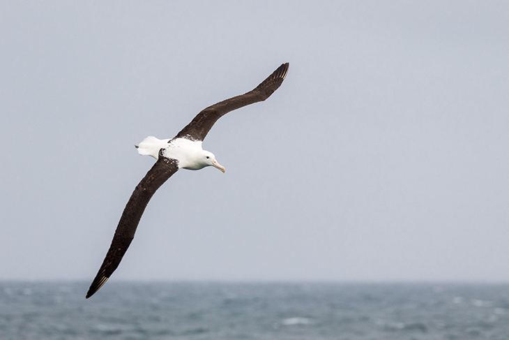
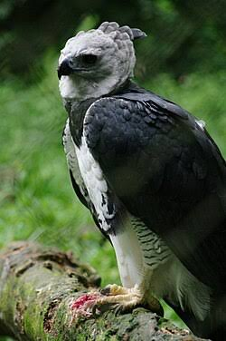

cieli aperti e alte quote
Grifone di Rüppell

Perché è straordinario: È il recordman assoluto di altitudine nel mondo animale.
Può volare fino a 11.300 metri d'altezza (dove normalmente volano gli aerei di linea),
grazie a una variante speciale di emoglobina che gli permette di assorbire l'ossigeno
anche nell'aria estremamente rarefatta della stratosfera.
Albatro urlatore

Perché è straordinario: Possiede l'apertura alare più grande al mondo (fino a 3,5 metri).
Può percorrere decine di migliaia di chilometri al di sopra degli oceani senza quasi mai battere le ali,
sfruttando il volo dinamico per sfruttare il vento e risparmiare energia.
Falco pellegrino

Perché è straordinario: È l'animale più veloce del pianeta. In picchiata per cacciare supera i 385 km/h.
Per non farsi scoppiare i polmoni ad alte velocità, le sue narici sono dotate di piccole strutture coniche
che regolano la pressione dell'aria.
Oca indiana

Perché è straordinaria: Durante le migrazioni sorvola direttamente la catena dell'Himalaya,
superando l'Everest a quote superiori agli 8.000 metri, sfidando venti gelidi e temperature sotto zero
con un volo battuto costante e faticosissimo.
foreste
Arpia

Perché è straordinaria: Tra i rapaci più grandi e potenti al mondo. Caccia bradipi e scimmie volando a grande velocità
tra i fitti rami della foresta pluviale. I suoi artigli sono lunghi quanto quelli di un orso grizzly (circa 10 cm)
e possono esercitare una pressione devastante.
Draco volante

Perché è straordinario: Un piccolo rettile che trasforma la gabbia toracica in un paracadute. Estendendo le costole coperte di membrana (patagio),
è in grado di planare con estrema precisione da un albero all'altro per oltre 60 metri per sfuggire ai predatori.
Pipistrello della frutta dalla testa a martello

Perché è straordinario: È il pipistrello più grande dell'Africa equatoriale. I maschi hanno una testa enorme dal muso squadrato e una cassa di risonanza
nell'apparato vocale che occupa metà della cavità corporea, usata per produrre potenti richiami di corteggiamento
che echeggiano nella giungla.
Volpe volante della Malesia

Perché è straordinaria: Uno dei pipistrelli più grandi al mondo, con un'apertura alare che può raggiungere 1,5 metri.
Svolge un ruolo ecologico fondamentale nella foresta: si nutre di frutta e nettare, garantendo la impollinazione e
la dispersione dei semi di centinaia di specie vegetali.